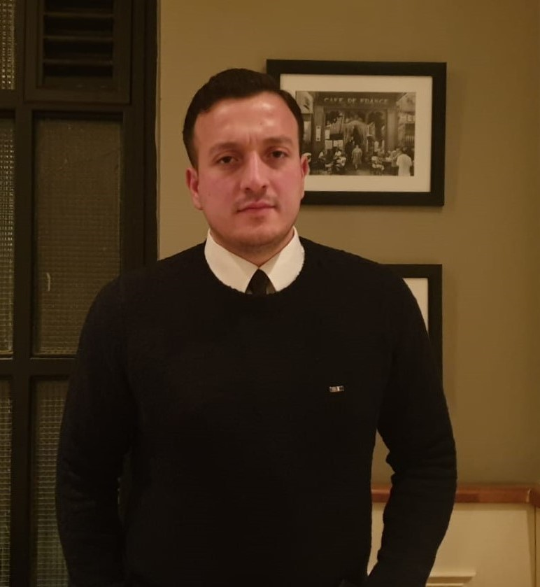

Welcome, and thank you for visiting my portfolio.
I am an IT Service Management professional with experience delivering enterprise-scale ITSM solutions across global organizations, including Mercedes-Benz Tech Turkey and ING. Throughout my career, I have contributed to the governance, continuous improvement and operational excellence of business-critical IT services, working closely with Development, Cloud, Infrastructure and Product teams within complex enterprise environments.
At Mercedes-Benz, I was responsible for IT Service Management process governance, Major Incident Management and operational excellence initiatives supporting globally distributed business-critical applications. Prior to that, at ING, I worked as an IT Change and Problem Analyst, where I gained extensive experience with ITSM platforms by contributing to Change, Problem, Demand and Integrated Risk Management processes, workflow improvements, platform configuration and enterprise IT governance.
My professional journey began during my undergraduate studies through internships and early career experiences at LeasePlan, Gtech, Cimri.com and Garanti BBVA Technology. These experiences introduced me to software development, business intelligence, enterprise applications, quality assurance and Agile ways of working, laying the foundation for my career in enterprise IT.
I graduated with a Bachelor of Science in Mathematical Engineering from Yıldız Technical University in 2020. My academic background has strengthened my analytical thinking and continues to influence the way I approach complex operational challenges, process optimization and technology-driven problem solving.
This portfolio showcases my professional experience, enterprise projects, technical expertise and continuous learning journey. My CV is available here.
If you would like to connect or discuss potential opportunities, feel free to contact me at fftulu@gmail.com.